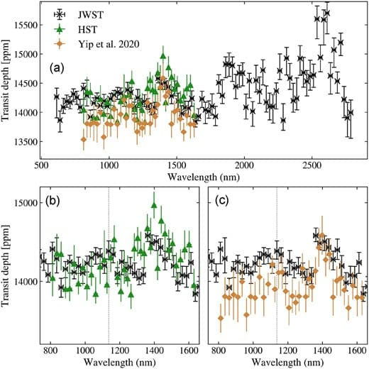

Education
PhD in Astronomy & Astrophysics
University of Manchester (2021 - 2025 expected)
Funded by UKRI-STFC scholarship
Integrated MSc in Physics & minor in Computer Science
NISER Bhubaneswar, India (2016 - 2021)
Funded by DST-INSPIRE scholarship
Experience
AI models and code evaluator
DataAnnotation (Part-time) (2024 - ongoing)
Evaluating and comparing AI models and their code generation capabilities, providing feedback for continuous model improvement.
Graduate Teaching Assistant
The University of Manchester (Feb 2022 - June 2024)
Taught physics courses, including computational physics, led lab demonstrations, conducted interviews, and graded assignments.
- Demonstrator for General Physics lab (2021-2022), Electronics lab (2022-23), Introduction to Programming (2023-24)
- Teaching assistant for interdisciplinary course "Are we alone" (2022-2023)
Visiting Student
IUCAA, Pune, India (Dec 2018 - Jan 2021)
Selected for the Vacation Students' Programme (VSP) 2020. Worked on characterizing quasars into BAL, emerging-BAL, and non-BAL quasars.
Summer Research Intern
Indian Institute of Technology, Guwahati (May 2018 - July 2018)
Investigated the optical limiting and spectroscopic properties of SiOx thin films.
Summer Research Intern
Indian Institute of Technology, Madras (May 2017 - July 2017)
Analyzed the optical spectroscopic properties of Pentacene thin films.
Featured Projects
TransitFit Python package
JBCA, University of Manchester (2022 - ongoing)
Developed "TransitFit", a tool for exoplanet transmission spectroscopy. Enables detection of atmospheric molecules and determination of physical parameters in exoplanets.
Exoplanet Demographics Study
JBCA, University of Manchester (2021 - ongoing)
Building a statistical tool to simulate planets around stars, estimating the number and characteristics of undetected planets to optimize future observations and planet formation theories.
Simulation and prediction of exoplanet atmosphere
NISER Bhubaneswar (2020 - 2021)
Modeled the atmosphere and simulated observations to predict the existence of HC₃N in a Super-Earth exoplanet GJ1132 b.
Publication: Paper
Machine Learning model to improve detection of dark matter
NISER Bhubaneswar (2020 - 2021)
Compared ML algorithms (Random Forest, SVM, Linear Regression, Neural Networks) to train and test a model over observational data. Improved accuracy of signal retrieval using Linear Regression and Random Forests.
Football Match Data Analysis and Visualization

Data analysis and visualization tool for football matches using Python, focusing on World Cup data. Shot maps and passing networks, using matplotlib and mplsoccer to provide actionable insights. Machine learning techniques for data binarization and feature encoding, enhancing the accuracy of event tagging and player performance metric.
summarAIzer: AI-Powered Research Paper Summarizer
It leverages AI to fetch, process, and summarize recent research papers from arXiv. It cross verifies its information to minimise inaccuracies. It's designed to help researchers and enthusiasts stay up-to-date with the latest developments in science.
Skills & Certifications
Certifications:
Publications
- Transit Timing Variation of K2-237b: Hints Toward Planet Disk Migration MNRAS Letters, 2024
- TransitFit: combined multi-instrument exoplanet transit fitting for JWST, HST, and ground-based transmission spectroscopy studies MNRAS, 2023
- Revisiting the Transit Timing and Atmosphere Characterization of the Neptune-mass Planet HAT-P-26 b The Astronomical Journal, 2023
- Detectable Abundance of Cyanoacetylene (HC3N) Predicted on Reduced Nitrogen-rich Super-Earth Atmospheres The Astrophysical Journal Letters, 2021
Honors and Awards
UKRI-STFC Scholarship
3.5-year scholarship from UKRI.
DST-INSPIRE Scholarship
5-year scholarship and contingency grant, given to a limited number of students, to facilitate and promote science education.
Silver Honour
International Astronomy and Astrophysics Competition (Jul 2020)
Scored 92 percentile globally.
Finalist
IISER Tirupati, Abhiprajna (May 2020)
Selected among the top 6 teams from India, in an astronomy themed science competition.
Outreach and Leadership
- Conference session organiser at National Astronomy Meeting 2024, Hull
- UKEXOM, 2024: Presented exoplanet demographics study
- UK National Astronomy Meeting, 2023: Presented exoplanet demographics study
- European Astronomical Meeting, 2023: Presented TransitFit
- Strange New Worlds Conference, 2023: Presented exoplanet demographics study
- JACS officer (2021-2023): Coordinated computing seminars at the University of Manchester's Astrophysics department
- Presented talk on habitable exoplanets at Pint of Science 2023
- Hosted a JWST workshop at UKSEDS 2023
- Exhibited at the JWST stand in the Bluedot festival, 2021
Contact Me
priyadarshi.akshay@outlook.com
Manchester, UK